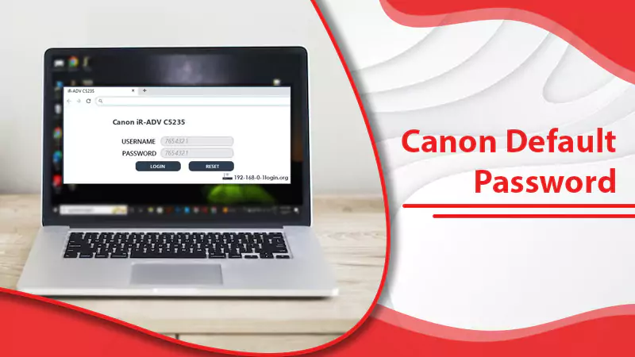

What do you mean by Canon Default Password?
Are you having trouble remembering your canon default password? Don’t worry; this post will help you retrieve your Canon Printer’s login and password quickly. Follow the technical techniques outlined in the article below to recover your Canon Printer Username and Password in a short period.
Canon Default password retriever short method
At the time of purchasing, the canon password is set. The printer serial number is the default password. The printer serial number is printed on a sticker that is affixed to the printer. It is made up of nine alphanumeric characters (four alphabets followed by five numbers)
One of the above-mentioned pairings will allow you to access the Canon printer console. Once you have access to the printer console, you can also create a new password.
If someone pre-configured the password and the canon default admin password isn’t functioning, use the procedures below to reset the password.
Steps to Reset Canon Printer Password
- Just go to the printer’s control panel and set up the printer.
- Then go to Device Settings. Reset the settings
- To return to the default settings, go to the setup menu and select reset all.
- You can now log in with the default username and password provided above and create a new password as needed. If you’re looking for a quick way to connect your Canon to a Wi-Fi network, try these techniques.
If you have forgotten your Canon printer username and password then, you need to follow the below steps. Password may change because official printer producers continue to change their passwords to keep their data protected. All things considered, you need to generate a new canon default password by changing the setting of the printer.
Depending on the printer model you are using; the canon username and password are given to clients at the hour of shopping of the printer. Password should either ‘canon’ or the printer chronic number is given. Continue reading to learn to reset or change the canon printer password.
- If the password is canon, the username assigned according to the printer model number beneath will be ADMIN.
- If the canon printer serial number is the password, then, at this point, the printer chronic number is the administrator password.
Set canon printer default username and password without any problem
At times, canon printer offline needs to fix then, at that point, further work on the printer username and password. Steps are given underneath set any printer model as default mode to run printer appropriately.
Keep the specialized rules given beneath and set the canon default admin password with simple tasks:
- Open the internet browser chrome, safari, or Firefox as you have.
- Presently, type the https://machine’s IP address in the program bar.
- Check print server name if these steps didn’t work out.
- Presently, type the default username and password of “init pass”.
- Select the admin tab.
- Screen pop-ups where you want to enter your new password.
- When you fill out the new one, Snap to confirm the field and set the default password.
- At last, click to submit.
Hence, when you fail to remember the printer username then follow the above actions and make a new default username and password for printer clients.
To Change the Password
You can change your password utilizing one of the tools/devices mentioned below:
- Operation panel.
- IJ Network Tool.
- Printer data screen displayed on some Canon application software.
Some restrictions and guidelines you need to follow while setting up your password: –
- Set the password by utilizing 4 to 32 characters and for security reasons, we suggest somewhere you at least 6.
- Use both letters and numerals.
On the off chance, it is a shared printer, contact the manager for the password. You can revert to the default password by introducing the printer settings.
Things to Remember
- You can change the password utilizing one of the tools listed above. And some of them may not be accessible depending upon the printer you are using.
Just for Windows
- If the password has been changed while you are sharing the printer and you don’t have a clue about the password, request the administrator of the printer you are utilizing.
- Put the password back to the default setting by initializing the printer settings.
Frequently Ask Questions
Q.1: How do I find the password for my canon printer?
- Unfortunately, the password for your Canon printer will depend on the specific model and whether or not you have changed the default password. If you have not changed it, the default password is usually “admin” or “0000”. If you have changed it, you will need to refer to the user manual or contact Canon support for assistance. Follow the steps:
- Check the printer’s documentation or instruction manual for the default password.
- Try the most common passwords such as “admin” or “password”.
- If the default password doesn’t work, you may need to reset the printer’s settings. Consult the printer’s instruction manual or user guide for instructions.
- If you still can’t find the password, contact Canon’s customer service line for assistance.
Q.2: What steps to find the canon default username and password?
Follow the given steps to find the canon default username and password:
- Look in the owner’s manual or user guide for your Canon device. The user guide should list the default username and password for the device.
- Check the manufacturer’s website for your device. Many manufacturers provide the default username and password for their products on their websites.
- Search online for Canon’s default username and password. This may provide you with additional information about the device and its default settings.
- Contact Canon customer service. They may be able to provide you with the default username and password for your device.
Q.3: What is the default password for canon printers?
The default password for Canon printers is usually “admin” or “password”. In most cases, the default password for Canon printers is either one of these two and can be used to access the printer’s administrative settings. If the default password is not known, it can usually be found in the printer’s manual or on the manufacturer’s website. It is also possible to reset the password to the default one. To do this, the printer must be switched off and then turned back on while holding a specific button or combination of buttons (depending on the model). After the reset, the printer should be ready to accept the default password. It is important to remember to change the default password after resetting, as it is easy for hackers to guess and access the printer’s settings.
Q.4 : What is my printer ADMIN password?
Your printer administrator password is a unique combination of characters that you create. It is used to protect your printer from unauthorized access. To create a strong password, use a combination of letters, numbers, and symbols that are at least 8-10 characters long. Make sure it is something that you can easily remember, but hard for others to guess. Avoid using common words, phrases, or numbers, such as your name, address, birth date, or other easily guessed information. It is important to change your password regularly to ensure your printer remains secure.
Quick Support!
We face many technical issues with the software, applications, PCs, or printers and we can’t take any chance to try solving through guesses. Take our help and assistance in solving any technical problem like this canon default password. The best services and working speed will sure impress you. You can reach us today if you face issues related to canon printers. Our technical team will help you in getting your issue resolved with proper instructions and assistance.